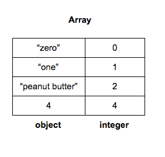
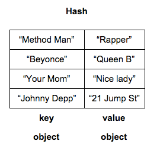
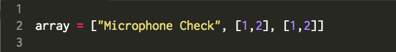
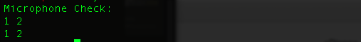

Things Noobs Should Know:
Arrays and Hashes Edition
October 5, 2014
Alright, noobs. It's time to put your coding caps on 'cuz were about to learn about some programming concepts. Read on to find my attempt at describing the ever-elusive subject of Arrays and Hashes.
Arrays and Hashes: What are they? Why are you telling me this?
At their most basic, arrays and hashes are things. That's right, I said things. To the more erudite among us, Hashes and Arrays can be formally described as data structures, but I assume that if you're reading this blog entry, you're a noob like me and you may or may not have an idea of what a data structure is. So, let's just keep it simple. Arrays and Hashes are things--things that store other things. That clear it up? No? I didn't think so.
It might help to think of Arrays and Hashes like tupperware containers made of code. Like tupperware, Hashes and Arrays can contain items—unlike tupperware those items aren't leftovers no one wants. Indeed, the items they store are called objects. But because we're all noobs here, and because the idea of objects can get a wee bit complicated when you're just learning about all of this, let's just say that Hashes and Arrays store information. Better? I thought so.
Now, Hashes and Arrays can both can store the same type of information, whether strings like “hey you!” or integers like 9--they just differ in their rules of construction and they way they store that information. Arrays are more rigid--any object you store in an array is going to be indexed by an ordered integer list. What? Okay, simple. Just think of it like this: any information you put in an array will be assigned a number--just like a numbered list. Except this list begins with zero. Look at this chart I made. I hope it makes what I'm trying o say more clear:

I placed the the string “zero” in the first position of my array. Because of how arrays work, the string “zero”was assigned the number zero. Don't get it confused though, I could've placed any string in the array and it would've been assigned an integer regardless of what the string was. You can see that more clearly with the string “peanut butter” which has been assigned the integer 2, because "peanut butter†was the third object placed in my array. Remember arrays begin they're number assignment at 0.
Now, hashes let you store information based on an arbitrary assignment of a value. Does that sound too computery? Just look at the hash chart I made to elucidate what I mean:

In a hash you can place any information you want. Unlike arrays, hashes don't assign an integer to correspond to the information you've placed within it. Hashes understand what you put in them as key/value pairs. So in the chart above, all my keys are names of people. All my values are associated with those people somehow. It just so happens that all of the information in my hash above take the form of strings. But because you can put any object in a hash, the information doesn't have to be a string. It can be anything!
This stuff sounds awesome. How can I make a Hash? How can I make an Array?
To make array, here's the syntax.
array = [ ] or array = Array.new( )
Those commands create and empty arrays. If you want to create an array with information (objects) already in it, you just have to place the information/objects in between the brackets like so:

With a little finagling (that we won't get into now) we could get the above array to return the following to our console:

To make a hash, here's the syntax:
hash = {} or hash = Hash.new()
Like the example with arrays above, that creates an empty hash. If you want to create a hash with information in it already, you can use the following syntax:

Again, through the magic of Ruby, you could get the following to show up in the console:
So if they both store information, why do they both exist? Is one better than the other?
Now, because I'm a noob myself, and because my experience with / exposure to Arrays and Hashes has been somewhat limited, I honestly struggle a bit with an explanation here. Hashes are more flexible, obviously, because a developer's not limited to the way information is stored within them. According to this articlearrays are efficient workhorses that are ubiquitous in ruby. Either way, they're both super-useful to allow information to be stored and accessed at will. Thus they're both essential concepts to understand in your journey to be a developer, dear noob!
Cultural Blog: Chefs in the Kitchen
A Noob's Take on the Culture of DBC
September 20, 2014
I just finished watching a large portion of DBC founder Shereef Bishay's fireside chat, and I really have to say that I'm drinking the Kool-Aid, guys. Word. This, despite the fact that Karim Bishay expressly stated that DBC isn't asking for that in the pre-phase 0 prep Emotional Intelligence video. Oh, yeaaahh! Haha.
Joking aside, I was really glad to have watched Shereef's chat; it covered a lot of questions I'd been thinking of prior to watching. The biggest thing I've taken away from the chat--and all of the pre-Phase 0 and Phase 0 work--is that i'm really digging the culture of DBC. I don't mean to sound corny, but it feels like this is the right fit.
By way of an example, I've engaged in meditation practice on and off for the last year or so. Recently, my practice has been more off than on--I'm sad to admit--nevertheless, I constantly strive to be present within myself and within social situations. So, when Karim talked about being present within the context of giving and receiving feedback, that really resonated with me. When Shereef talked about fostering a collaborative environment, that resonated too. My previous professional environment was so different from all of this. As a criminal defense attorney, I lived everyday in an a predominantly antagnositc and adversarial world. And honestly, a little part of me felt like it was dying then. DBC feels more like the environment I should have been in; one that fosters creativity and that encourages sharing and openness. This is what I've been looking for.
Don't get me wrong, I can't pretend I'm coming into this all awe and no fear. I'm scared shitless, guys. I am. I'm scared of looking stupid. I'm scared of being vulnerable enough to be okay with saying I'm wrong. I'm scared of failing. I'm just heartened that at DBC it seems that it's really okay to be scared and it's really okay to be wrong, and it sounds like DBC is really invested in each of us NOT failing.
Anyway, that's my little take on this. I'm really excited to meet everyone at DBC. Just counting down the days until Nov 17th, now!
DBC Blog Post # 1:
"Git Bloggin'"
September 18, 2014
We've touched on many concepts that were new to me in this first week of DBC Phase 0, and I'd like to take a little bit of time to explain some of them in a way that's accessible and hopefully easy to understand.
Below you'll find my attempt to do just that on the topic of version control and, relatedly, on how git and Github track changes and stores code.
Version Control: What is it?
Stated (hopefully) simply, version control is is a process of file management that allows a user to make multiple edits on a file without fear of changing or destroying the original. Each and every edit can be saved during this process, allowing a user to revisit any former iteration of the file. It's perhaps most easy to think of it like a save point in a video game. A user has the option to save everything she did up to a point and revisit that specific point whenever she wants.
Why is Version Control beneficial?
Multiple save points are beneficial because a user never has to fear making changes. She won't have to worry that a change will destroy something she's spent hours creating because, provided that she's saved along the way, she'll be able to revisit any past verison of the file she wants. Within the coding context, this is super helpful. Code can go through many iterations before the final version. Using version control, a coder can make edits on a discrete part of the code and test to how that change works within the whole without fear that anything will be destroyed.
git and Version Control: How git helps you Track Changes.
Within the git platform, version control is easy to implement. All git folders are tracked folders. What that means is that whenever a user makes a change to a file within a git-tracked folder, git detects it. A user can check the status of a file's changes by entering "git status" (without the quotes) on the command line from within the appropriate directory. Git will return information about the file's status--from whether it's been modified or whether there's been no changes.
Once a file has been modified, a user can decide to save--or commit--those changes using the following series of commands:
git add [file]
git commit -m "[message about the changes made]"
git push orgin master
git add [file] tells git that the user is ready to commit the file--or save the changes made.
git commit -m "[message]" allows the user to enter a short message about the specific changes to the file.
Finally, "git push origin master" (again without quotes) "pushes" the changes to the file to the user's remote repository (we haven't covered the meaning of this within this blog post yet--but suffice it to say, a remote repository is like a folder hosted on a server outside the local computer)
If a user wants to see the entire history of a file's changes, she can enter "git log" (no quotes) on the command line. This will return the commit number, the author's name, the date and time of the modification and the commit message.
GitHub. What is it?
Github is an online platform that allows git users to upload and share files via the site's remote repositories. Not only can users of Github see all versions of any of the uploaded files uploaded to the repositories, but they can also actively make changes on other users' files and submit proposed changes for incorporation, or merging.
Why use GitHub to store your code?
GitHub has a large and active online community of coders, many of whom are committed to improving code through collaboration. GitHub's remote repositories encourage collaborative work; all members can access other users' public repositories and submit changes to existing files. There is a review process before any changes are incorporated--or merged, however, so there's no fear that one user's changes will overwrite another's. This can allow multiple individuals to work on the same files without destroying the original. In sum, GitHub is a great platform that's collaboration-friendly.
contact: dstanfield.esq@gmail.com
Philadelphia | PA